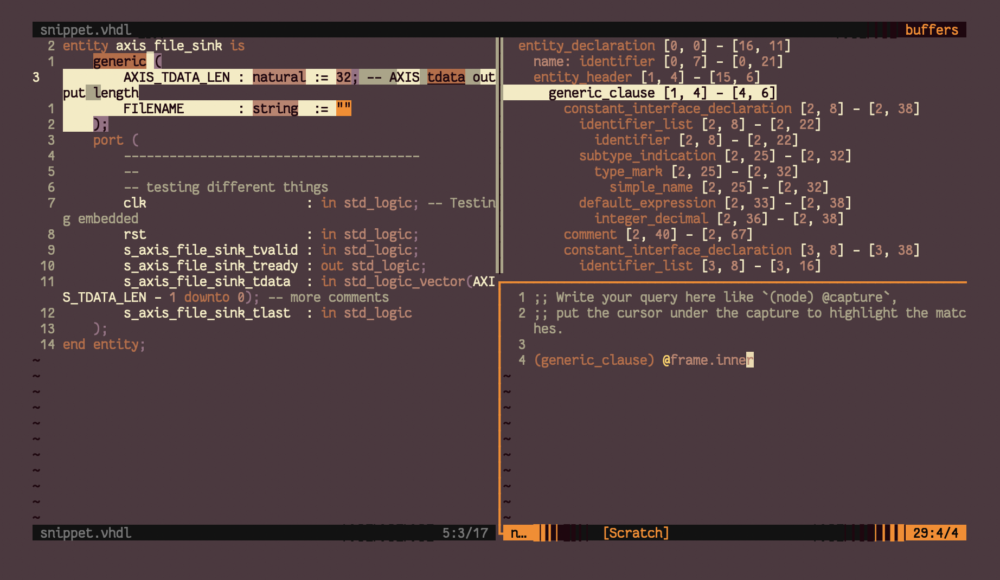

homepage - tags - github - site code
Would it even be a real IDE if you didn't have to manually add your own language support?
Nov 28 2022
If you haven't been following recent changes in IDE-land, you may have missed the landing of Tree-Sitter into the popular fork of vim, neovim (as of v0.5). Tree-sitter is "an incremental parsing system for programming tools" - what that means for an IDE such as neovim is more robust, much faster parsing of a buffer's text into a language specific AST (abstract syntax tree). This AST can then be used by a broad range of tools or features - faster syntax highlighting, language-aware movement, arbitrary new textobjects - that improve the power with which a programmer can read and interact with their code.
Aside - since tree-sitter itself is IDE-agnostic, nvim-treesitter is the plugin used to manage and provide tree-sitter support. A nice benefit of this is that tree-sitter can be integrated in to any IDE, not just neovim. Thus, improvements to language queries or grammars can be made by anybody with language-specific knowledge, rather than the old way of, for example, python syntax colors in vim requiring somebody to know both Python and how to write a vim highlight file.
There are a ton of blog posts and video tutorials describing how to set up tree-sitter in neovim from scratch, both from when this feature landed in 0.5 and more recently. The purpose of this blog post, however, is to detail the steps to add query support for language that isn't yet supported by nvim-treesitter.
Depending on the popularity and complexity of a language, it may take a long time to add support in tree-sitter or to make sure that language is properly supported in nvim-treesitter (see the tracking issue for language support). If you want to use an as-yet-unsupported language, hopefully you don't have to implement a full parser yourself - it may be as simple as finding an existing parser and defining some queries yourself.
In fact, nvim-treesitter-textobjects tells us how to do just that! The readme references the nvim-treesitter repo, which also specifies how to add queries.
Say I want to add support to neovim for VHDL. The tracking issue in nvim-treesitter has a comment which notes VHDL as yet-to-be-implemented, and from there we find our VHDL parser.
To install it, we'll follow nvim-treesitter's instructions:
# clone the project (can clone it to anywhere)
$ git clone https://github.com/alemuller/tree-sitter-vhdl ~/.config/nvim/tree-sitter/tree-sitter-vhdl
# run tree-sitter generate to build it
$ cd ~/.config/nvim/tree-sitter/tree-sitter-vhdl
$ tree-sitter generate
And then, we'll install it in our init.lua (if you're still using init.vim, you can add lua snippets in vimscript by surrounding the lua code with lua <<EOF and EOF):
local parser_config = require "nvim-treesitter.parsers".get_parser_configs()
parser_config.vhdl = {
install_info = {
url = "~/.config/nvim/tree-sitter/tree-sitter-vhdl", -- local path or git repo
-- this is the file built by tree-sitter generate
files = {"src/parser.c"},
-- optional entries:
branch = "main", -- default branch in case of git repo if different from master
generate_requires_npm = false, -- if stand-alone parser without npm dependencies
requires_generate_from_grammar = false, -- if folder contains pre-generated src/parser.c
},
filetype = "vhdl", -- if filetype does not match the parser name
}
Then, start nvim again and run :TSInstall vhdl. If that works, you can open a VHDL file and see the results for any tree-sitter modules you have enabled (e.g. highlight, selection). In fact, I tested this by checking whether incremental-selection (provided by tree-sitter) worked - open a VHDL file (snippet below), and issue your keybinding for initializing and incrementing a selection. You should see your visual selection expand incrementally, using the power of tree-sitter!
entity axis_file_sink is
generic (
AXIS_TDATA_LEN : natural := 32; -- AXIS tdata output length
FIlENAME : string := ""
);
port (
---------------------------------------
--
-- testing different things
clk : in std_logic; -- Testing embedded
rst : in std_logic;
s_axis_file_sink_tvalid : in std_logic;
s_axis_file_sink_tready : out std_logic;
s_axis_file_sink_tdata : in std_logic_vector(AXIS_TDATA_LEN - 1 downto 0); -- more comments
s_axis_file_sink_tlast : in std_logic
);
end entity;
Dealing with text objects is one of the great advantages of vim. Issuing yi) can "y"ank the text object corresponding to text "i"nside a pair of parens, ca" can "c"hange the text object "a"round the surrounding double-quotes, and more. There are numerous plugins out there to extend the default textobjects provided by vim, and tree-sitter and tree-sitter-textobjects together provide several default language-aware objects. Now you can carry out powerful manipulations like jumping by structs, or swapping a function argument with the previous one - all with the configurable keybindings and without having to go find a language-specific plugin.
So what if we want to select an entity in VHDL? Simple - we just define a capture like this, in queries/vhdl/textobjects.scm:
; extends
(entity_declaration) @class.inner
(entity_declaration) @class.outer
And now, we ensure we have keymaps for selecting a textobject called @class.inner and @class.outer in our init.lua (or init.vim). If you already have the textobjects module configured, you won't even have to change your configuration here!
-- this table is generally declared inside the configs block:
-- require'nvim-treesitter.configs'.setup {
-- provided by nvim-treesitter-textobjects plugin
textobjects = {
select = {
enable = true,
-- automatically jump forward to textobj
lookahead = true,
keymaps = {
-- other keymaps elided
-- note you can use any keybinding you like here
["ac"] = "@class.outer",
["ic"] = "@class.inner",
},
},
And now, we can simply issue vic to "v"isually select "i"nside VHDL entity ("c"lass)!
If you're having a trouble finding specific nodes or capture expressions to use, you can check out the nvim-treesitter/playground plugin - it can display the parsed AST for text in a buffer as well as let you test capture expressions.

~ tags : #neovim